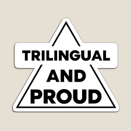

Personal Information
Chad Smith
DOB & Place of Birth: Nov 1/1965
Born in Vancouver
Marital Status: Complicated
Contact Information
Phone: +1 (555) 123-4567Email: chad.smith@example.com
Address: 1234 Maple Street, Vancouver, BC, Canada
LinkedIn: linkedin.com/in/chadsmith
GitHub: github.com/chadsmith
Personal Qualities
- Strong communication skills, with the ability to effectively convey ideas and build relationships.
- Adaptable and open-minded, thriving in dynamic environments and embracing new challenges.
- Highly empathetic and skilled in conflict resolution, fostering positive teamwork and collaboration.
- Detail-oriented with exceptional organizational skills, ensuring accuracy and efficiency in all tasks.
- Proactive problem solver with a creative mindset, capable of developing innovative solutions.
- Dependable and self-motivated, consistently meeting deadlines and exceeding expectations.
- Resilient and emotionally intelligent, adept at handling stress and maintaining composure under pressure.
- Strong leadership skills with a collaborative approach, inspiring and motivating others toward shared goals.
Education

-
Bachelor of Science in Computer Science
- University of British Columbia (UBC), Vancouver, BC
- September 1983 - May 1987
-
Master of Business Administration (MBA)
- University of Toronto, Rotman School of Management, Toronto, ON
- September 1988 - June 1990
-
High School Diploma
Vancouver Secondary School, Vancouver, BC
September 1979 - June 1983
Professional Knowledge and Skills
Chad Smith has advanced knowledge of software development, data structures, and algorithms, with proficiency in programming languages such as Python, Java, C++, and JavaScript. He holds notable certifications, including Certified Python Developer (CPD) from the Python Institute (issued June 2019) and Java SE Programmer I (Oracle Certified Associate, issued August 2020).
Additionally, Chad has extensive experience in project lifecycle management and team leadership, supported by certifications such as Project Management Professional (PMP) from PMI (issued April 2021) and Agile Certified Practitioner (PMI-ACP, issued February 2022).
Fluent in multiple languages, Chad is a native English speaker, has professional working proficiency in French, and intermediate proficiency in Spanish, demonstrated by his DELE Level B1 certification from Instituto Cervantes (issued December 2018).
